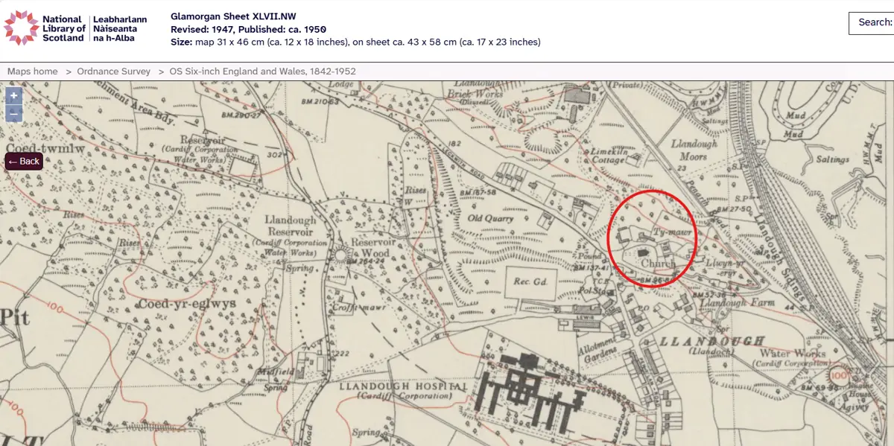

GHF-E106-R61-A1 fee or clarification demand
Ordnance Survey six-inch map, Glamorgan XLVII.NW (rev. 1947)

Transcript
Leabharlann Glamorgan Sheet XLVII.NW Naiseanta Revised: 1947, Published: ca. 1950 na h-Alba Size: map 31 x 46 cm (ca. 12 x 18 inches), on sheet ca. 43 x 58 cm (ca. 17 x 23 inches) Search: "4, National Library of Scotland Maps home > Ordnance Survey > OS Six-inch England and Wales, 1842-1952 =
Artifact description
Asks under FOIA s.1(3) which location is meant: OS finds a Great House Farm at Llandough near Cowbridge and a separate Ty Mawr near Llandough-juxta-Penarth (map of c.1950 attached); the 20 working days restart after clarification; the request closes if unanswered within two months.
| Catalogue ID | GHF-E106-R61-A1 |
|---|---|
| What it is | Image from Ordnance Survey. Attached to an email received on 26 October 2026, their reference FOI-26-46. 1 page. |
| From | Ordnance Survey |
| Email received | 26 October 2026 |
| Their reference | FOI-26-46 |
| Pages | 1 |
| File | image.png (2000 KB) |
| State | Read |
Our integration
A screenshot of the Ordnance Survey six-inch map, Glamorgan Sheet XLVII.NW (revised 1947, published about 1950), as shown on the National Library of Scotland's map viewer. Ordnance Survey attached it to ask which place the request meant, since it found a "Great House Farm" near Cowbridge and a separate "Ty Mawr" near Llandough-juxta-Penarth.
Why it matters: this is the second record on file where a public body treats two places as one name. The same mix-up runs through the RCAHMW catalogue entry for "Great House (Ty Mawr), Bonvilston". Each time it is fixed, the records a body actually holds for Tŷ Mawr at Llandough-juxta-Penarth become easier to find. It also puts the 1947 survey on the record as a mapped date for the farm.
What cuts against the case: asking which place is meant is correct under FOIA s.1(3), and the clock restarts only after clarification. Ordnance Survey is not refusing anything.
Next dated step: a clarification reply restarts the 20 working days; the request closes if unanswered by about 26 December 2026.
Related: The covering email · What They Don’t Say: WTDS-6da7290e-1, WTDS-6da7290e-2 · EV-0424 in the evidence catalogue · Timeline · Disclosure Dartboard